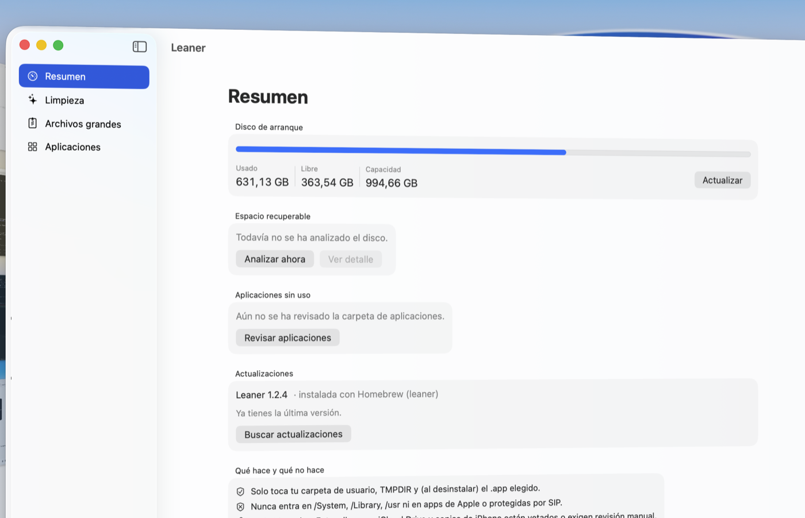

Recupera el disco que se comen Xcode, Gradle, Maven, node y los simuladores.
App nativa para macOS 14 o posterior. Firmada con Developer ID, notarizada por Apple y sin telemetría.

Con Homebrew, que además se encarga de las actualizaciones:
brew install --cask leaner-app/tap/leanerO desde la terminal, sin Homebrew:
curl -fsSL https://raw.githubusercontent.com/leaner-app/releases/main/install.sh | zshLos limpiadores para Mac buscan cachés de navegador y archivos de idioma. En una máquina de desarrollo eso es calderilla: lo que ocupa son los repositorios de dependencias, las distribuciones descargadas, los índices de compilación y los simuladores. Este es el reparto real en el equipo donde se desarrolla Leaner:
| Cachés de apps Chromium y Electron (Chrome, VS Code, Slack, Spotify…) | 11,5 GB |
| Repositorio local de Maven | 7,1 GB |
| Distribuciones de Gradle y JDKs | 5,2 GB |
Cachés de herramientas de terminal (~/.cache) | 2,2 GB |
| Cachés de npm, yarn, pnpm, pip, Homebrew, Cargo, Go… | 1,2 GB |
| Registros del daemon de Gradle | 1,2 GB |
| Cachés del sistema, papelera, descargas, datos de apps desinstaladas… | ~1 GB |
| Total propuesto | 29 GB |
Lo Seguro viene preseleccionado; lo de Revisar solo se elimina si lo marcas tú.
| Cachés y registros de apps, Papelera, estado de ventanas | Seguro |
| Cachés de apps Chromium y Electron | Seguro |
| Cachés de gestores de paquetes y del daemon de Gradle | Seguro |
| DerivedData de Xcode y simuladores sin runtime | Seguro |
| Repositorio de Maven, distribuciones de Gradle y JDKs | Revisar |
| Cachés de terminal, temporales antiguos, Playwright | Revisar |
| DeviceSupport y Archives de Xcode | Revisar |
| Apps instaladas en simuladores apagados | Revisar |
| Descargas de Mail, instaladores y descargas antiguas | Revisar |
| Copias de iPhone/iPad y datos de apps desinstaladas | Revisar |
Además desinstala apps sin uso arrastrando sus datos, y localiza los archivos más grandes.
Una app que borra archivos y pide «Acceso total al disco» tiene que ganarse ese permiso.
swift test. Es el mismo archivo que compila la app, con su sha256.$TMPDIR y, al desinstalar, la
app que elijas. Nunca /System, /Library, /usr ni apps protegidas por SIP.